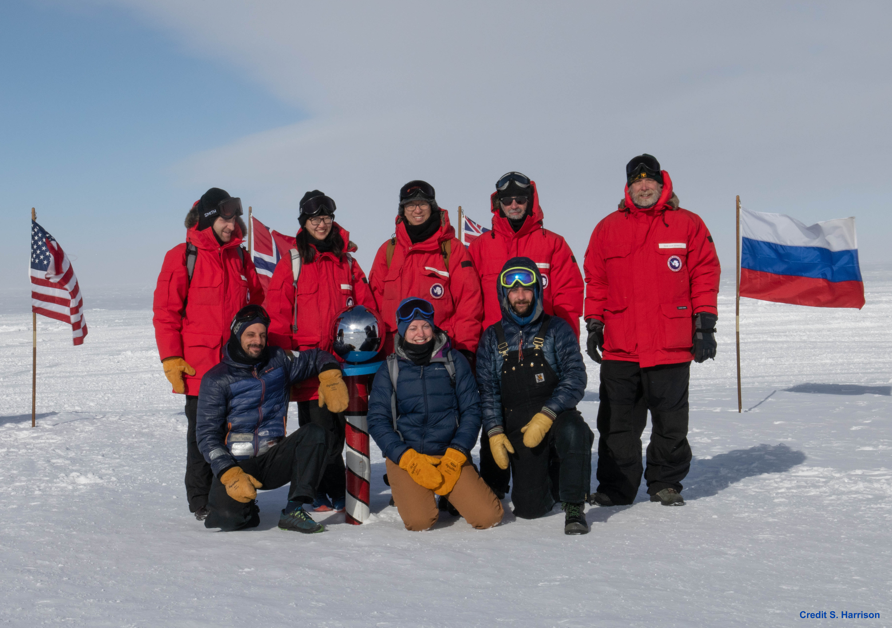

Hunting for Inflation
The BICEP/Keck program aims to discover signatures of cosmic inflation through its imprint on the Cosmic Microwave Background (CMB). The CMB is believed to contain a polarization pattern uniquely sourced by gravitational waves generated during the Universe's early expansion. To this day the theory of inflation lacks direct experimental confirmation. Models predict the existence of B-mode polarization at degree angular scales, and such a detection would be a major step forward in our understanding of physics in the early Universe.
